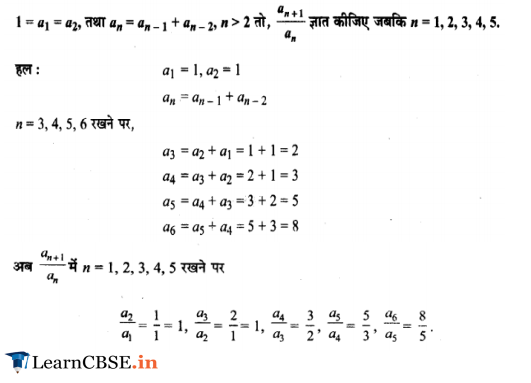

Ex 9.1 Class 11 Maths
Sequences and Series Class 11 Maths NCERT Solutions are extremely helpful while doing your homework. NCERT Solutions for Class 11 Maths Chapter 9 Sequences and Series All Exercises were prepared by Experienced LearnCBSE.in Teachers.
Free download NCERT Solutions for Class 11 Maths Chapter 9 Sequences and Series Ex 9.1, Ex 9.2, Ex 9.3, Ex 9.4 and Miscellaneous Exercise PDF in Hindi Medium as well as in English Medium for CBSE, Uttarakhand, Bihar, MP Board, Gujarat Board, BIE, Intermediate and UP Board students, who are using NCERT Books based on updated CBSE Syllabus for the session 2019-20.
- Sequences and Series Class 11 Ex 9.1
- Sequences and Series Class 11 Ex 9.2
- Sequences and Series Class 11 Ex 9.3
- Sequences and Series Class 11 Ex 9.4
- Sequences and Series Class 11 Miscellaneous Exercise
- अनुक्रम तथा श्रेणी प्रश्नावली 9.1 का हल हिंदी में
- अनुक्रम तथा श्रेणी प्रश्नावली 9.2 का हल हिंदी में
- अनुक्रम तथा श्रेणी प्रश्नावली 9.3 का हल हिंदी में
- अनुक्रम तथा श्रेणी प्रश्नावली 9.4 का हल हिंदी में
- अनुक्रम तथा श्रेणी विविध प्रश्नावली का हल हिंदी में
- Sequences and Series Class 11 Notes
- NCERT Exemplar Class 11 Maths Sequences and Series
- JEE Main Mathematics Sequences and Series Previous Year Questions
NCERT Solutions for Class 11 Maths Chapter 9 Sequences and Series
Topics and Sub Topics in Class 11 Maths Chapter 9 Sequences and Series:
| Section Name | Topic Name |
| 9 | Sequences and Series |
| 9.1 | Introduction |
| 9.2 | Sequences |
| 9.3 | Series |
| 9.4 | Arithmetic Progression (A.P.) |
| 9.5 | Geometric Progression (G.P.) |
| 9.6 | Relationship Between A.M. and G.M. |
| 9.7 | Sum to n terms of Special Series |
NCERT Solutions for Class 11 Maths Chapter 9 Exercise 9.1
Ex 9.1 Class 11 Maths Question 1:
Ans:
Ex 9.1 Class 11 Maths Question 2:
Ans:
More Resources for CBSE Class 11
- RD Sharma Class 11 Solutions Some Special Series
- NCERT Solutions
- NCERT Solutions Class 11 Maths
- NCERT Solutions Class 11 Physics
- NCERT Solutions Class 11 Chemistry
- NCERT Solutions Class 11 Biology
- NCERT Solutions Class 11 Hindi
- NCERT Solutions Class 11 English
- NCERT Solutions Class 11 Business Studies
- NCERT Solutions Class 11 Computer Science
Ex 9.1 Class 11 Maths Question 3:
Ans:
Ex 9.1 Class 11 Maths Question 4:
Ans:
Ex 9.1 Class 11 Maths Question 5:
Ans:
Ex 9.1 Class 11 Maths Question 6:
Ans:

Ex 9.1 Class 11 Maths Question 7:
Ans:
Ex 9.1 Class 11 Maths Question 8:
Ans:
Ex 9.1 Class 11 Maths Question 9:
Ans:
Ex 9.1 Class 11 Maths Question 10:
Ans:
Ex 9.1 Class 11 Maths Question 11:
Ans:


Ex 9.1 Class 11 Maths Question 12:
Ans:
Ex 9.1 Class 11 Maths Question 13:
Ans:

Ex 9.1 Class 11 Maths Question 14:
Ans:


NCERT Solutions for Class 11 Maths Chapter 9 Sequences and Series (अनुक्रम तथा श्रेणी) Hindi Medium Ex 9.1



NCERT Solutions for Class 11 Maths Chapter 9 Exercise 9.2
Ex 9.2 Class 11 Maths Question 1:
Ans:
Ex 9.2 Class 11 Maths Question 2:

Ans:
Ex 9.2 Class 11 Maths Question 3:
Ans:
Ex 9.2 Class 11 Maths Question 4:

Ans:
Ex 9.2 Class 11 Maths Question 5:
Ans:
Ex 9.2 Class 11 Maths Question 6:
Ans:
Ex 9.2 Class 11 Maths Question 7:
Ans:


Ex 9.2 Class 11 Maths Question 8:
Ans:
Ex 9.2 Class 11 Maths Question 9:
Ans:
Ex 9.2 Class 11 Maths Question 10:
Ans:


Ex 9.2 Class 11 Maths Question 11:
Ans:

Ex 9.2 Class 11 Maths Question 12:
Ans:


Ex 9.2 Class 11 Maths Question 13:
Ans:

Ex 9.2 Class 11 Maths Question 14:
Ans:

Ex 9.2 Class 11 Maths Question 15:
Ans:

Ex 9.2 Class 11 Maths Question 16:
Ans:


Ex 9.2 Class 11 Maths Question 17:
Ans:
Ex 9.2 Class 11 Maths Question 18:
Ans:

NCERT Solutions for class 11 Maths Chapter 9 Exercise 9.3
Ex 9.3 Class 11 Maths Question 1:
Ans:

Ex 9.3 Class 11 Maths Question 2:
Ans:
Ex 9.3 Class 11 Maths Question 3:
Ans:
Ex 9.3 Class 11 Maths Question 4:
Ans:

Ex 9.3 Class 11 Maths Question 5:
Ans:


Ex 9.3 Class 11 Maths Question 6:
Ans:


Ex 9.3 Class 11 Maths Question 7:
Ans:
Ex 9.3 Class 11 Maths Question 8:
Ans:
Ex 9.3 Class 11 Maths Question 9:
Ans:
Ex 9.3 Class 11 Maths Question 10:

Ans:
Ex 9.3 Class 11 Maths Question 11:
Ans:
Ex 9.3 Class 11 Maths Question 12:
Ans:


Ex 9.3 Class 11 Maths Question 13:
Ans:
Ex 9.3 Class 11 Maths Question 14:
Ans:
Ex 9.3 Class 11 Maths Question 15:

Ans:


Ex 9.3 Class 11 Maths Question 16:
Ans:

Ex 9.3 Class 11 Maths Question 17:
Ans:
Ex 9.3 Class 11 Maths Question 18:
Ans:

Ex 9.3 Class 11 Maths Question 19:
Ans:
Ex 9.3 Class 11 Maths Question 20:
Ans:
Ex 9.3 Class 11 Maths Question 21:
Ans:
Ex 9.3 Class 11 Maths Question 22:
Ans:


Ex 9.3 Class 11 Maths Question 23:
Ans:

Ex 9.3 Class 11 Maths Question 24:
Ans:

Ex 9.3 Class 11 Maths Question 25:
Ans:
Ex 9.3 Class 11 Maths Question 26:
Ans:
Ex 9.3 Class 11 Maths Question 27:
Ans:
Ex 9.3 Class 11 Maths Question 28:
Ans:

Ex 9.3 Class 11 Maths Question 29:
Ans:

Ex 9.3 Class 11 Maths Question 30:
Ans:

Ex 9.3 Class 11 Maths Question 31:
Ans:
Ex 9.3 Class 11 Maths Question 32:
Ans:

NCERT Solutions for Class 11 Maths Chapter 9 Exercise 9.4
Ex 9.4 Class 11 Maths Question 1:
Ans:
Ex 9.4 Class 11 Maths Question 2:
Ans:
Ex 9.4 Class 11 Maths Question 3:
Ans:
Ex 9.4 Class 11 Maths Question 4:
Ans:
Ex 9.4 Class 11 Maths Question 5:
Ans:
Ex 9.4 Class 11 Maths Question 6:
Ans:
Ex 9.4 Class 11 Maths Question 7:
Ans:


Ex 9.4 Class 11 Maths Question 8:
Ans:
Ex 9.4 Class 11 Maths Question 9:
Ans:
Ex 9.4 Class 11 Maths Question 10:
Ans:


Class 11 Maths NCERT Miscellaneous Solutions
Miscellaneous Exercise Class 11 Maths Question 1:
Ans:
Miscellaneous Exercise Class 11 Maths Question 2:
Ans:
Miscellaneous Exercise Class 11 Maths Question 3:
Ans:
Miscellaneous Exercise Class 11 Maths Question 4:
Ans:
Miscellaneous Exercise Class 11 Maths Question 5:
Ans:


Miscellaneous Exercise Class 11 Maths Question 6:
Ans:
Miscellaneous Exercise Class 11 Maths Question 7:

Ans:

Miscellaneous Exercise Class 11 Maths Question 8:
Ans:
Miscellaneous Exercise Class 11 Maths Question 9:
Ans:
Miscellaneous Exercise Class 11 Maths Question 10:
Ans:
Miscellaneous Exercise Class 11 Maths Question 11:
Ans:
Miscellaneous Exercise Class 11 Maths Question 12:
Ans:
Miscellaneous Exercise Class 11 Maths Question 13:
Ans:


Miscellaneous Exercise Class 11 Maths Question 14:
Ans:
Miscellaneous Exercise Class 11 Maths Question 15:
Ans:
Miscellaneous Exercise Class 11 Maths Question 16:
Ans:
Miscellaneous Exercise Class 11 Maths Question 17:
Ans:


Miscellaneous Exercise Class 11 Maths Question 18:
Ans:
Miscellaneous Exercise Class 11 Maths Question 19:
Ans:
Miscellaneous Exercise Class 11 Maths Question 20:
Ans:
Miscellaneous Exercise Class 11 Maths Question 21:
Ans:

Miscellaneous Exercise Class 11 Maths Question 22:

Ans:
Miscellaneous Exercise Class 11 Maths Question 23:
Ans:
Miscellaneous Exercise Class 11 Maths Question 24:
Ans:
Miscellaneous Exercise Class 11 Maths Question 25:
Ans:
Miscellaneous Exercise Class 11 Maths Question 26:
Ans:
Miscellaneous Exercise Class 11 Maths Question 27:
Ans:
Miscellaneous Exercise Class 11 Maths Question 28:
Ans:

Miscellaneous Exercise Class 11 Maths Question 29:
Ans:
Miscellaneous Exercise Class 11 Maths Question 30:
Ans:
Miscellaneous Exercise Class 11 Maths Question 31:
Ans:
Miscellaneous Exercise Class 11 Maths Question 32:
Ans:
NCERT Solutions for Class 11 Maths All Chapters
- Chapter 1 Sets
- Chapter 2 Relations and Functions
- Chapter 3 Trigonometric Functions
- Chapter 4 Principle of Mathematical Induction
- Chapter 5 Complex Numbers and Quadratic Equations
- Chapter 6 Linear Inequalities
- Chapter 7 Permutation and Combinations
- Chapter 8 Binomial Theorem
- Chapter 9 Sequences and Series
- Chapter 10 Straight Lines
- Chapter 11 Conic Sections
- Chapter 12 Introduction to Three Dimensional Geometry
- Chapter 13 Limits and Derivatives
- Chapter 14 Mathematical Reasoning
- Chapter 15 Statistics
- Chapter 16 Probability